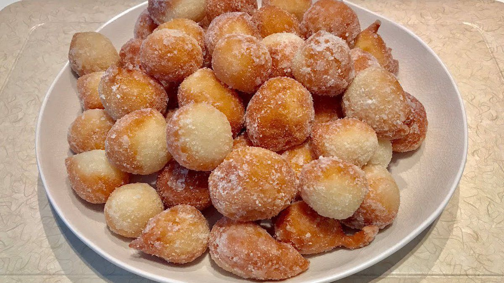

Kaimati (Fried Dumplings) Recipe

Description
Kaimatis get their unique flavour from the style with which yeast is
applied on wheat flour. This traditional breakfast dish or day snack is
common among the Swahili and Bajuni communities and was inherited from
Arab culture. It serves the whole family.
Ingredients
- 2 cups (280 g) wheat flour, refined
- 2 cups (447 g) water
- ½ tsp. (3 g) vanilla essence, clear
- ½ tsp. (1 g) cardamoms powder
- 1¼ tbsp. (12 g) yeast, dry
- 5 1/8 cups (1000 g) cooking oil
- 4 tbsp. (56 g) sugar
Preparation 20 minutes | Cooking 30 minutes | Serves 4
- Put yeast in a small container.
- Add 50ml of warmed water.
- Add 4 tbsp. of sugar and allow to stand for 3 minutes.
- Meanwhile, warm the rest of the water in a cooking pot.
-
Mix dry ingredients together; flour, cardamoms and vanilla essence in a
bowl.
-
Add ¼ cup (50 g) of oil into the mixture and rub in until finely
absorbed.
-
Add the yeast preparation to the flour mixture, adding the lukewarm
water gradually while mixing to a semi-solid consistency
-
Cover with a dry towel/ cloth and allow to stand for 4 minutes until the
dough rises.
-
In a pan put the rest of the oil and heat for 7 minutes or until the oil
bubbles when a pinch of dough is dropped in the oil.
-
Shape the dough into round balls and put into the hot oil, keep turning
to cook evenly.
- Deep fry for 3-4 minutes.
- Remove from oil.
Topping ingredients
- 1 cup (187 g) white sugar
- ½ cup (116g) water
- ½ tsp. (4 g) vanilla essence, clear
Preparation of sugar syrup
- Mix the sugar, water and vanilla essence in a cooking pan.
- Put on the heat for 5 minutes.
-
Stir to prevent sugar from sticking on the sides of the pan; the mixture
should be sticky.
-
Add the fried dumplings to the sugar syrup and stir to coat them in the
syrup while still on the heat.
- Swirl until the syrup covers all the dumplings
- Serve as desired
Home